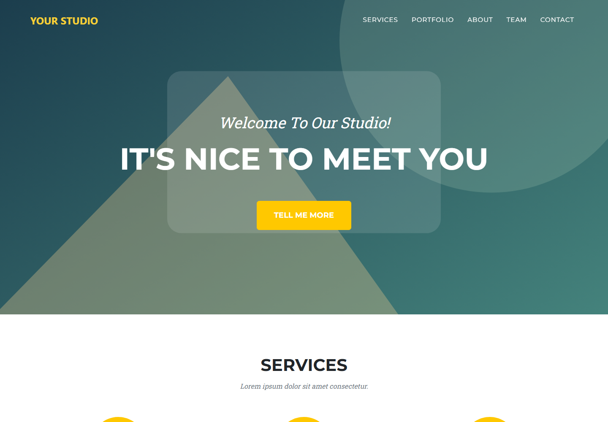

CLIENT TOOLS · MIT
Agency website
A responsive agency website with services, project modals, a team section and sample contact form.
Original source and review
StartBootstrap/startbootstrap-agency supplies the original code. The ZIP includes the reviewed Lyre configuration and any compatibility fixes. To clone the original instead, follow the setup guide to add Lyre support.
Basic security review